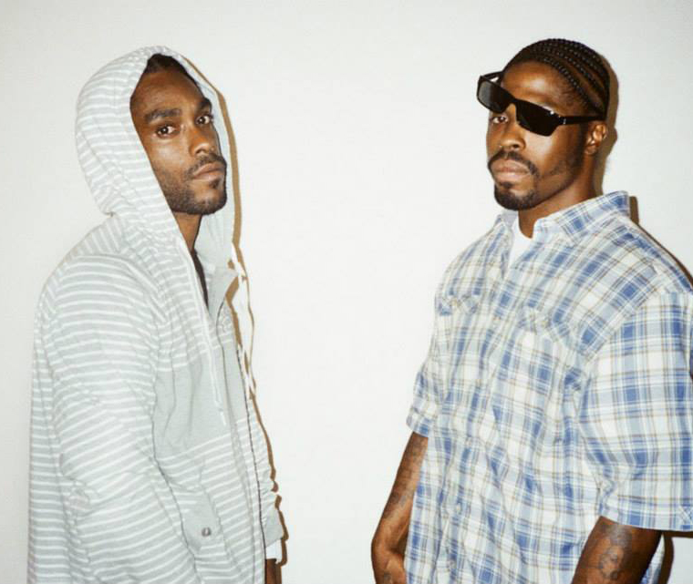
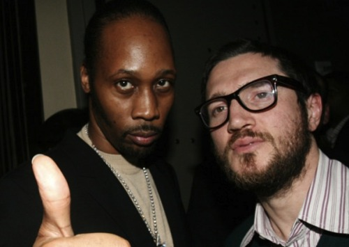

Album „Medieval Chamber” to pierwsza próba hip-hopowej produkcji podjęta przez jednego z największych gitarzystów wszechczasów według magazynu Rolling Stone.
„Odkryłem, że ogromną wolność daje w hip-hopie to, że jeśli masz mocny bit i temat, który kreatywnie mogą przedstawić raperzy, to możesz wykorzystać do ich uzupełnienia dosłownie każdy rodzaj muzyki jaki chcesz.” wyjaśnia Frusciante.” Każdą piosenkę mogę wykończyć samplując muzykę klasyczną, rockową czy opartą na free jazzie. Czułem większą swobodę pracując nad tym albumem niż nad czymkolwiek innym.”
„Medieval Chamber” to album który nie przeprasza za to jaki jest i głosi pochwałę niezłomności i wytrwałości. Pierwszy singiel „The Joust” otwierają słowa „Zwycięzca nigdy nie przegrywa, przegrany nigdy nie wygrywa”, i ta tematyka przewija się przez całą płytę. Poważne, wręcz filozoficzne teksty Black Knights stapiają się z muzyką wyprodukowaną przez Frusciante i tworzą naprawdę innowacyjny dźwiękowy pejzaż.
“Kiedy jesteśmy w studio, nie chodzi nam o tworzenie typowych piosenek” – mówi Rugged Monk. „Chcemy grać utwory, które ludzie zagrają dziś, za rok i które będą żyły.”
„John Frusciante to niezwykle muzykalny facet,” – chwali swojego producenta Monk. „Kiedy wszedł w to, co chcieliśmy zrobić i poznał nasze brzmienie, mogliśmy wzajemnie wiele od siebie czerpać.”
„Medieval Chamber” to pierwsze od trzech lat pełne wydawnictwo grupy. To także hołd złożony jej historii i przywołanie postaci jej byłego członka, Doc Dooma, który został zastrzelony w 2007 roku. Na płycie wyraźnie widać zakorzenienie grupy w stylu zachodniego wybrzeża oraz wpływy stylu „east coast”. 
Ale nowa płyta to nie tylko ukłon dla przeszłości. Black Knights zapewniają, że mają zgromadzony materiał na dwa kolejne krążki i piszą kolejne utwory. Mówiąc o swoim najnowszym oraz o planowanych na przyszłość wydawnictwach Rugged Monk obiecuje „Zaatakujemy was ze wszystkich stron.”
Album „Medieval Chamber” można zamawiać już w przedsprzedaży na nowej stronie Black Knights www.blackknightsmusic.com Ukaże się nakładem wytworni Record Collection 14 stycznia 2014 roku.
A to krótki tekst na należącym do internetowego magazynu LA Weekly blogu West Coast Sound, którego autorem jest Patrick Flanary.
Już w styczniu nowy album Black Knights wyprodukowany przez Johna Frusciante
Gitarzysta John Frusciante opuścił w 2008 roku zespół Red Hot Chilli Peppers by solo tworzyć w domowym zaciszu muzykę synthpop. Od tamtej pory niewiele było o nim słychać.
Jednak w lipcu tego roku powiedział mi o „najzabawniejszej muzycznej współpracy, jaką miał z kimkolwiek w swoim życiu” – produkcji przygotowywanego właśnie albumu hip-hopowej formacji Black Knights, powiązanej z rezydującym w Los Angeles Wu-Tang Clan.
Teraz, gdy jako pierwsi znamy datę wydania, możemy na West Coast Sound podzielić się z Wami tą informacją.
Album nosi tytuł „Medieval Chamber” i ukaże się 14 stycznia 2014 roku. Przygotowali go dwaj raperzy: Rugged Monk i Crisis Tha SharpShooter.
„Dzięki technologii możemy cieszyć się muzyczną relacją w której nikt nie mówi nikomu co robić, nikt nikogo nie ogranicza, nikt z nikim się nie kłóci.” – powiedział Frusciante. „Wszyscy chcemy usłyszeć tę samą płytę – w taki sposób to odbieram.”
Po rozpoczęciu solowej kariery Frusciante, długo uwielbiany jako jeden z najbardziej twórczych rockowych gitarzystów, przerzucił się na syntetyzatory i automaty perkusyjne. Nagrał całą serię albumów z eksperymentalną elektroniczną muzyką dla mającej swoją siedzibę w Los Angeles niezależnej wytwórni Record Collection.

Obu raperów poznał w ubiegłym roku za pośrednictwem wspólnego przyjaciela, RZA z Wu-Tang Clan, który odkrył Black Knights pod koniec lat 90. „Medieval Chamber” – również wydawany przez Record Collection – łączy ich agresywny, szybki flow z typowymi dla Frusciante „stukającymi” bitami i przetworzonymi zapętleniami.
Znany ze swoich harmonii wokalnych z frontmanem RHCP, Anthony`m Kiedisem Frusciante zaśpiewał także w dwóch utworach, co nieco osłodziło mieszankę mocnych rymów oraz sampli pistoletowych strzałów i dialogów „złych kolesi” ze starych filmów.
„Medieval Chamber” to także dowód kolejnej zmiany kierunku dokonanej przez Frusciante. Członek Rock and Roll Hall of Fame powiedział niedawno, że bardziej identyfikuje się z kompozytorami muzyki klasycznej niż z gwiazdami rocka. Projekt z Black Knights to jego powrót do zespołowego tworzenia muzyki.
„Bardzo odpowiadają mi reguły hip-hopu, „ powiedział, „ i pozwalają mi na absolutną swobodę.”
źródło:http://blogs.laweekly.com/westcoastsound/2013/11/john_frusciante_black_knights.php?ref=trending